Emergent Phenomena Revealed in Subatomic Matter (EmPRiSM)
Sprint Participants
| Name | Role | Affiliation |
| Waseem Kamleh | Principal Investigator | University of Adelaide |
| Deva Deeptimahanti | Technical POC | Pawsey Centre |
| Joseph Schoonover | Mentor | Fluid Numerics |
Summary
In this mentored sprint, we focused on porting a mini-application that implemented a preconditioned conjugate gradient solver to invert a symmetric positive definite system using matrix-free methodology. The matrix-action consists of 4-D stencil operations on vector functions that are akin to a Laplacian operator.
At the start of the sprint, we demonstrated that the code can run on Nvidia V100 (Topaz), AMD MI100 (Mulan), and AMD MI250x (Setonix) GPUs. We found initially that the performance on the Nvidia V100 GPUs achieved about 85% peak performance (relative to an empirically measured peak), but only 30%-40% on AMD GPUs. The main factor limiting performance on the AMD GPUs was found to be low occupancy which was caused by shared memory usage. Removing shared memory usage in favor of using vector registers drastically improved performance on the MI100 and MI250x GPUs; this change increases register usage but reduces the LDS pressure, increasing the theoretical occupancy to 78% on the AMD MI100 and MI250x GPUs. This change resulted in 1.8x speedup on the MI250x GPU with ROCm 5.0.3, and 1.6x speedup on the MI100 GPU with ROCm 4.5.0.
Additional efforts were made to further improve the performance on the AMD GPUs with the goal of reaching ~85% peak memory bandwidth. These efforts included (1) reordering of instructions to improve the L2 cache hit rate, (2) setting launch_bounds parameters for HIP kernels, (3) using non-temporal store operations to write the results of stencil operations to memory, and (4) using a subdomain memory layout. These changes resulted in minor improvements to the runtime; all four changes provide 2.2x speedup over the original version of the application on MI250x GPUs with ROCm 5.0.3. In the end, we were able to achieve ~85% of peak memory bandwidth on the MI100’s with ROCm 4.5.0 and 74% on the MI250x’s with ROCm 5.0.3.
We conclude the sprint with some observations, open questions, and future directions to explore:
-
The original version of the application achieves 85% (empirical) peak memory bandwidth on V100’s, but only 33% on the MI250x and 44% on the MI100’s. To explain this, we lean on the idea that GPUs are able to obtain good performance through latency hiding made possible by having a large number of wavefronts/warps in flight. Additionally, the low cache hit and bandwidth limited features of the stencil operations are associated with high store/load latency costs. The AMD GPUs have a wavefront size of 64, while the Nvidia GPU warp size is 32. It is reasonable to assume that (roughly) half as many wavefronts are active on the AMD GPUs for the same kernel relative to the Nvidia GPUs, which provides fewer opportunities for latency hiding. We suspect that, because of this, application performance on AMD GPUs is more sensitive to cache misses at lower theoretical occupancy.
-
The profiles on Mulan show significantly higher usage of spilled registers than on Setonix. We suspect that this is due to the older version of ROCm 4.5.0, relative to ROCm 5.0.3, rather than the details of the differences in CDNA1 and CDNA2 GPU architectures. To investigate this further, we can use the ROCm/5.4.3 installations on both Setonix and Mulan.
-
The subdomained version of the stencil operations results in the removal of the spilled register usage on MI250x GPUs with ROCm 5.0.3 and an increase in performance. It’s not clear, at the moment, why this change resulted in no spilled registers, while the original version of the code (and other branches with other changes) all use 20 spilled registers. We note that setting the launch_bounds did not influence the amount of spilled registers.
-
Although performance is improved on the MI250x relative to the MI100 GPUs, we are only able to obtain 74% peak memory bandwidth on the MI250x while we obtain 85% on the MI100. We note that the CDNA2 architecture supports only 32 wavefronts in flight per CU, while the CDNA1 architecture supports 40 wavefronts in flight per CU. Additionally, each MI250x GCD has 110 active CUs, while the MI100 has 120 active CUs. This implies that the MI100 GPU can support up to 4800 wavefronts in flight while the MI250x GCD can support 3520 wavefronts (26% reduction). This provides fewer opportunities to hide operation latency, which we suspect may explain why we are further from peak memory bandwidth on the MI250x GPUs than the MI100s; this requires further investigation.
You can access an interactive report containing profiles and runtime metrics obtained during this sprint.
Introduction
Software Description
Before the start of the sprint, a mini-application that exercises key portions of the code is able to be compiled and run on Topaz and Mulan. Scripts for installing and profiling on Mulan and Topaz have been developed and posted to the PawseySC/performance-modelling-tools repository.
The code primarily runs a preconditioned conjugate gradient solver on a 4-D finite difference stencil for a Laplacian with single precision arithmetic. Each grid location stores a vector of values, which imposes a higher memory requirement than standard Laplacian codes that work only on scalars.
The problem size is determined by the size of the lattice, indicated by four parameters (nx, ny, nz, nt) . To start we consider two problem sizes
- nx=16, ny=16, nz=16, and nt=32
- nx=32, ny=32, nz=32, and nt=64
Pre-Sprint Status
Hotspot profiles
MI100
On Mulan, initial profiling is done using rocprof with the --sys-trace --stats flags to create hotspot and trace profiles. The trace profile is then downloaded from Mulan and visualized using Perfetto.
Figure 1 shows the trace profile and a hotspot profile of the HIP kernels for the 16x16x16x32 problem. The four most expensive kernels, in terms of time spent during execution are
- EOCloverFBCGPU
- EOCloverDagFBCGPU
- OECloverDagFBCGPU
- OECloverFBCGPU
These routines account for more than 80% of the total runtime on Mulan’s AMD MI100 GPUs.
| 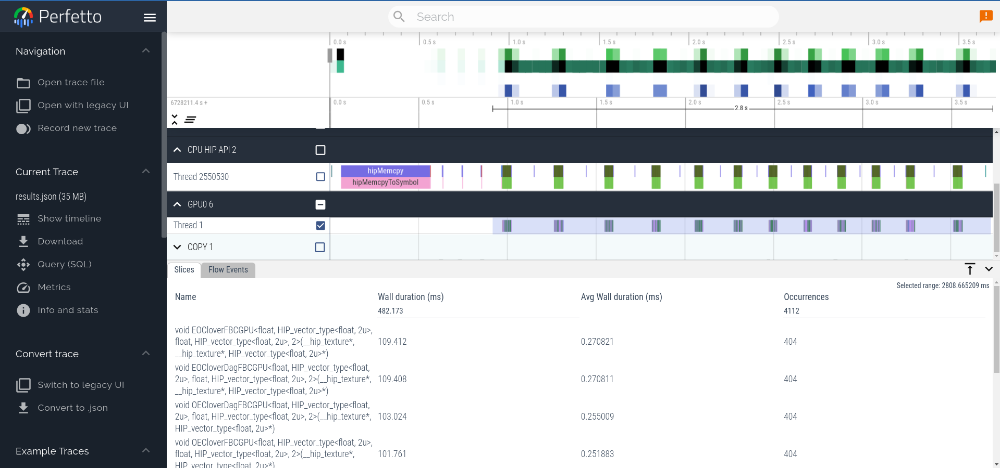 |
| Figure 1 : Screenshots of the trace profile (top) and hotspot profile (bottom) in Perfetto for the 16x16x16x32 problem. The trace profile depicts a timeline of activity on the GPU, with time increasing from left to right. Colored markers are used to indicate distinct kernels or API calls. The hotspot profile shows a list of HIP kernels, ordered from most expensive to least expensive, in terms of runtime. |
| 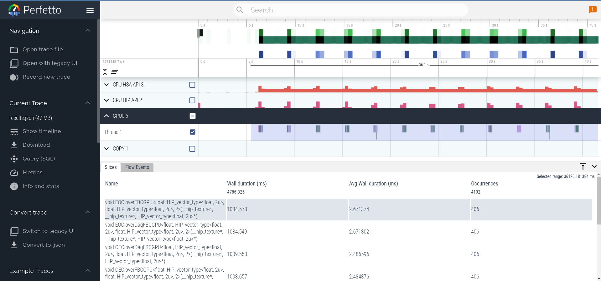 |
| Figure 2 : Screenshots of the trace profile (top) and hotspot profile (bottom) in Perfetto for the 32x32x32x64 problem. The trace profile depicts a timeline of activity on the GPU, with time increasing from left to right. Colored markers are used to indicate distinct kernels or API calls. The hotspot profile shows a list of HIP kernels, ordered from most expensive to least expensive, in terms of runtime. |
V100
On Topaz, we use nvprof to create trace and hotspot profiles. The profiles are then downloaded onto a local workstation and visualized using the Nvidia Visual Profiler. As observed on Mulan, the same 4 kernels account for the majority of the runtime on the GPU.
| 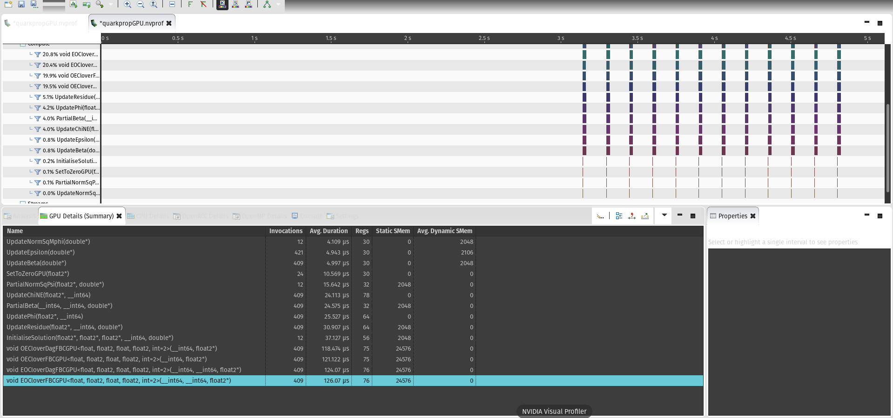 |
| Figure 3: Screenshot of the trace profile (top) and hotspot profile (bottom) in the Nvidia Visual Profiler (nvvp) for the 16x16x16x32 problem. The trace profile depicts a timeline of activity on the GPU, with time increasing from left to right. The top two rows show memory copy activity between the host and device while the remaining rows show kernel activity. The hotspot profile shows a list of CUDA kernels, ordered from least expensive (top) to most expensive (bottom), in terms of runtime. |
| 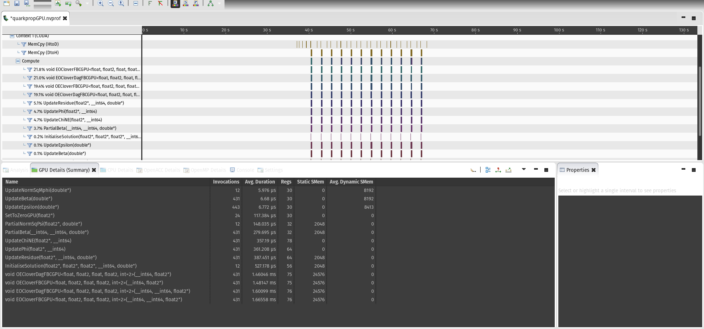 |
| Figure 4: Screenshot of the trace profile (top) and hotspot profile (bottom) in the Nvidia Visual Profiler (nvvp) for the 32x32x32x64 problem. The trace profile depicts a timeline of activity on the GPU, with time increasing from left to right. The top two rows show memory copy activity between the host and device while the remaining rows show kernel activity. The hotspot profile shows a list of CUDA kernels, ordered from least expensive (top) to most expensive (bottom), in terms of runtime. |
|
|||||||||||||||
| Table 1: Summary of the hotspot profile comparison on Topaz (V100) and Mulan (MI100) for the 16x16x16x32 problem |
|
|||||||||||||||
| Table 2: Summary of the hotspot profile comparison on Topaz (V100) and Mulan (MI100) for the 32x32x32x64 problem |
Tables 1 and 2 summarize the hotspot profiles for both Topaz and Mulan. For both test cases, we see that Mulan is about a factor of two slower. To understand why, we look at detailed metrics on the Nvidia GPU first.
| 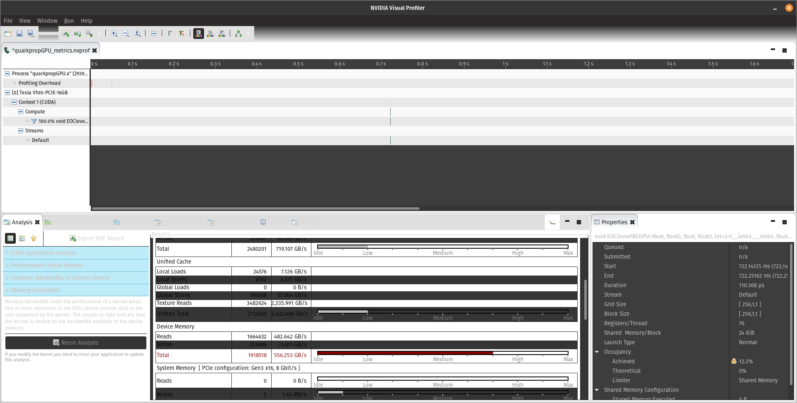 |
| Figure 5: Screenshot of the Nvidia visual profiler while performing kernel analysis for the EOCloverFBCGPU kernel for the 32x32x32x64 problem. The profiler had indicated that the kernel spent most of its time in memory operations, suggesting that its performance is memory bound. This screenshot shows a breakdown of the memory utilization on the GPU. The Device Memory usage (second row from the bottom in the middle panel) shows the achieved device memory bandwidth is 556.253 GB/s, which is ~65% of the empirically measured peak of 851.12 GB/s (See Table 3). |
| Figure 6: Screenshot of the Nvidia visual profiler while performing kernel analysis for the EOCloverFBCGPU kernel for the 32x32x32x64 problem. The profiler had indicated that the kernel spent most of its time in memory operations, suggesting that its performance is memory bound. This screenshot shows a breakdown of the memory utilization on the GPU. The Device Memory usage (second row from the bottom in the middle panel) shows the achieved device memory bandwidth is 724.277 GB/s, which is ~85% of the empirically measured peak of 851.12 GB/s (See Table 3). |
Performance Analysis
When discussing performance, we will focus primarily on the achieved memory bandwidth. We use this as our performance metric since the code effectively performs stencil operations, which notoriously are performance-limited by memory bandwidth. We also compare the achieved bandwidth to an empirically measured peak memory bandwidth obtained from a microbenchmark, rather than the vendor reported peak memory bandwidth.
In this section, we review the performance of the EO/OEClover*FBCGPU kernels by measuring the achieved memory bandwidth and the percentage of the empirical peak bandwidth. This information is then used to set the goals for the performance after making the transition to AMD GPUs.
We start by reviewing the microbenchmark application used to obtain the empirical peak performance and then follow up with profiling results for the V100 and MI100 GPUs. The Nvidia profilers provide many of the metrics needed to characterize and explain performance. Rocprof, however, provides only basic information that we need to combine with other resources in order to characterize and explain the performance. Because of this, the section on the MI100 performance analysis includes descriptions for measuring memory bandwidth and estimating occupancy.
Microbenchmark for peak memory bandwidth
Datasheets for the AMD MI100_ _and Nvidia V100 GPUs suggest that AMD MI100 GPU peak bandwidth is higher. To illustrate this is observed in practice, we’ve created scripts for Topaz (V100) and Mulan (MI100) to run the ekondis/mixbench microbenchmark. The mixbench microbenchmark measures the runtimes of various kernels with known arithmetic intensity in addition to the amount of bytes read and written and the number of FLOPS. A python script (mixbench-report.py) is provided to parse the output of mixbench and report the results to a json, csv, or to stdout.
|
||||||||||||
| Table 3 : Summary of the theoretical peak bandwidths and empirically measured peak bandwidths for V100 GPUs on Topaz, MI100 GPUs on Mulan, and MI250x GPUs on Setonix. The empirically measured peaks are taken as the maximum measured value across all kernels for the fp32 kernels. |
V100
Figure 5 shows a screenshot from the memory bandwidth analysis of the EOCloverFBCGPU kernel. The Nvidia profiler confirms that this kernel (and the other top four) is performance-bound by global memory bandwidth; this is consistent with what we would expect for a stencil code. In the bottom right panel of the screenshot, there is more information about this kernel :
- There are 76 registers/thread
- 24 KiB Shared Memory per Block
- Achieved occupancy is 12% (theoretical is 37.5%) and occupancy is limited by shared memory
MI100 & MI250X
Memory Bandwidth
On the AMD GPUs, we can estimate similar metrics using the ROCm profiler. When profiling for hardware metrics, rocprof will automatically return
- lds : the amount of shared memory per block (lds),
- vgpr : the number of vector registers per thread (vgpr),
- sgpr : the number of scalar registers per wavefront (sgpr).
We can also enable the following metrics to calculate the total amount of data read/written from/to global memory
- FETCH_SIZE : The total kilobytes fetched from the video memory. This is measured with all extra fetches and any cache or memory effects taken into account.
- WRITE_SIZE : The total kilobytes written to the video memory. This is measured with all extra fetches and any cache or memory effects taken into account.
We can then calculate TOTAL_RW = FETCH_SIZE + WRITE_SIZE[^1] for each kernel call and average across multiple calls to a kernel to obtain an estimate of the total amount of data read/written from/to global memory. Then, dividing TOTAL_RW by the average kernel runtime provides an estimate of the achieved memory bandwidth. An example of this for Mulan (for the 16x16x16x32 problem is shown in this spreadsheet ).
Figure 6 shows the average TOTAL_RW (in KB) for the EOCloverFBCGPU and EOCloverDagFBCGPU kernels as a function of problem size. For the 16x16x16x32 problem, we have TOTAL_RW=77.87891 MB. From Table 1, we know that this kernel runs for 0.270821 ms on average; this gives an estimated bandwidth of 287.566 GB/s, which is about 26.7 % of the empirical peak memory bandwidth.
Similarly, for the 32x32x32x64 problem, we have TOTAL_RW=1.29009797 GB and the runtime for EOCloverFBCGPU is 2.671374 ms. This gives an estimated memory bandwidth of 482.934 GB/s, which is about 44.9 % of the empirical peak memory bandwidth.
| 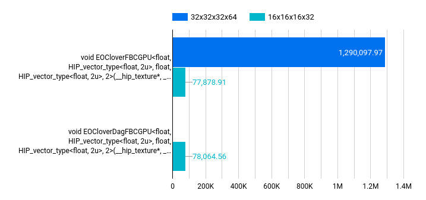 |
| Figure 7 : Plot showing the average TOTAL_RW (in KB) for the EOCloverFBCGPU and EOCloverDagFBCGPU kernel on Mulan as a function of problem size. |
|
||||||||||||
| Table 4 : Summary table comparing the achieved memory bandwidth for each system for the EOCloverFBCGPU kernel for both problem sizes. |
With stencil codes, like the EOClover* kernels, we expect that there is some out-of-order memory access pattern. This can cause cache eviction and increase the number of fetches from global memory. In ROCprof, the metric we’re interested in is
- L2CacheHit : The percentage of fetch, write, atomic, and other instructions that hit the data in L2 cache. Value range: 0% (no hit) to 100% (optimal).
Lower values of the L2 Cache hit indicate that frequently data is not found in L2 Cache and the kernel must fetch data from global memory.
On Mulan, we find that the L2 Cache hit ratio is on average about 60.2% for EOClover* kernels for both problem sizes. On Setonix, we find that the L2 Cache hit ratio is on average about 62.72%.
On Topaz, we use the nvprof command line interface to diagnose the L2 Texture read and write hit rate (See Figure 8). On V100 instances, we find that the L2 Texture read hit rate is 59.45%, which is strikingly similar to the L2 Cache hit rate on the MI100 and MI250x GPUs.
| 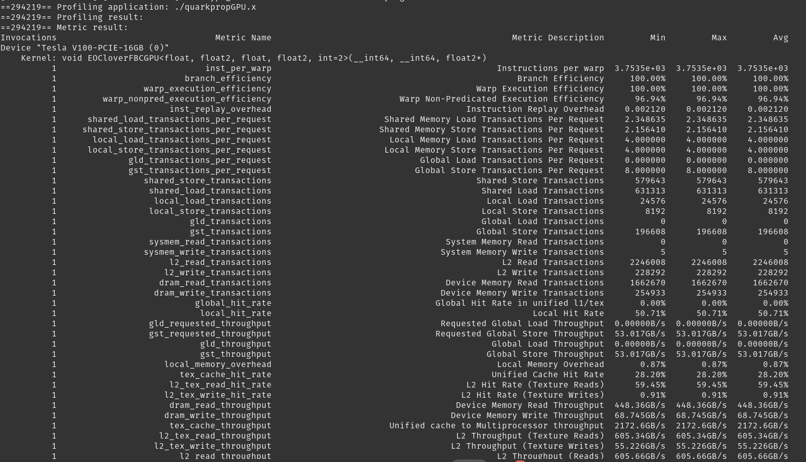 |
| Figure 8 : Screenshot of the nvprof CLI output for metrics collected on the EOCloverFBCGPU kernel on Topaz (V100). Notice specifically the L2 Texture Read hit rate is around 59.45 %. |
Occupancy
Occupancy is a measure of the number of active wavefronts divided by the maximum possible number of wavefronts on the GPU. Higher occupancy is associated with a greater degree of thread level parallelism, which can help hide latency of math and memory operations and is often associated with better application performance. However, some applications have low occupancy and have good performance; for example FFTs in rocfft and cufft have achieved occupancy around 20%, but they achieve near peak bandwidth on V100 and MI100 GPUs. Nonetheless, occupancy is a useful metric for characterizing a kernel on the GPU. \ \ For the CDNA1 architecture, each compute unit can have at most 40 wavefronts in flight. The MI100 GPUs have 120 compute units, giving a maximum of 4800 wavefronts in flight.
On the CDNA2 architecture, each compute unit can have at most 32 wavefronts in flight. Each GCD on the CDNA2 multichip-module has 110 active compute units, giving a maximum of 3520 wavefronts in flight ( 26 % reduction relative to CDNA1 ).
This section covers how we estimate the theoretical occupancy. For convenience, we have created a Theoretical Occupancy Calculator that takes into account register pressure and LDS pressure for AMD and Nvidia GPUs.
# Register Pressure
Contention for vector registers and scalar registers on each compute unit can result in decreases in occupancy. Since each CU can have 40 wavefronts in flight at any time (10 per SIMD Unit, 4 SIMD Units per CU), to saturate the GPU, each CU must be assigned 2560 threads (40 wavefronts x 64 threads/wavefront). On AMD GPUs there are two kinds of registers[^2]
- Vector registers (VGPR): Storage for variables with (potentially) unique values for each thread in a wave. Almost all local variables will end up in VGPRs
- Scalar registers (SGPR): Storage for variables that are uniform across all threads in a wave (e.g., a kernel argument, a pointer, constant buffers, etc.)
- SGPRs can only spill into VGPRs.
The number of registers per thread limits the number of wavefronts that can be launched. Specifically, the number of wavefronts per CU that can be in-flight simultaneously, with consideration only for vector registers is
where \(N_{V,max} = \frac{N_{V,CU}}{T_{CU}}\) is the maximum number of VGPRs per thread, \(N_{V,CU}\) is the number of VGPRs per CU, \(T_{CU}\) is the maximum number of threads per CU, \(N_{V,used}\) is the number of VGPRs used/required per thread, and \(W_{CU,max}\) is the maximum number of wavefronts per CU. Similarly, the number of wavefronts per CU that can be in-flight simultaneously, with consideration only for the scalar registers is
where \(N_{S,max} = \frac{N_{S,CU}}{T_{CU}}\) is the maximum number of SGPRs per thread, \(N_{S,CU}\) is the number of SGPRs per CU, \(T_{CU}\) is the maximum number of threads per CU, \(N_{S,used}\) is the number of SGPRs used/required per thread, and \(W_{CU,max}\) is the maximum number of wavefronts per CU.
On the CDNA architecture (MI100), a compute unit can support at most 40 wavefronts, which is equivalent to 2560 ( = 40*64 ) threads.
Given the available 128K VGPRs[^3] per compute unit, this implies that
In other words, saturating the GPU with the maximum number of active wavefronts, means that each thread can have a maximum of 50 VGPRs at any given time. Using more than 50 vector registers per thread will lower the occupancy on the GPU.
Given the available 3200 SGPRs[^4], saturating the GPU means that each thread can have a maximum of
In our example, we have found through profiling that the EOCloverDagFBCGPU kernel requires 52 VGPRs per thread and 64 SGPRs per wavefront. This suggests that
- \(W_{VGPR} = floor(0.962 \cdot W_{CU,max}) = 38\)
- \(W_{SGPR} = W_{CU,max} = 40\)
The theoretical occupancy is the ratio of the number of active wavefronts to the total possible number of wavefronts
- \(O_{VGPR} = 96.2\%\)
- \(O_{SGPR} = 100\%\)
LDS Pressure
The use of LDS can also limit the achieved occupancy of a GPU. Each compute unit has a fixed LDS size. The number of wavefronts that can run on each CU can be determined by dividing the amount of LDS on a compute unit by the amount of LDS required for a work-group (a work-group is synonymous with a CUDA block)
Where \(G_{max}\) is the maximum number of work-groups per compute unit, \(LDS_{CU}\) is the amount of LDS per compute unit, and \(LDS_{G}\) is the amount of LDS per work-group. The maximum number of wavefronts that can be in flight per compute unit, due to LDS usage, is given by
Where \(W_{G}\) is the number of wavefronts per working group.
On Mulan, the AMD MI100 GPU has 64 KB of LDS per CU. In our problem, the EOClover methods launch with 256 threads per work-group and requests 24 KB of shared memory per work-group. Then, we have that
- \(G_{max}= \frac{64 KB}{24 KB} = 2.66\)
- \(W_G=4\) (there are 4 wavefronts (256/64 = 4) per working group).
Thus, \(W_{LDS} = 10\) and \(O_{LDS} = \frac{10}{40} = 25\%\)
Together, this suggests that the occupancy for this kernel on the AMD MI100 GPU is limited by LDS usage.
Summary
In summary, we have the following observations
-
Shared Memory / LDS usage limits the occupancy on both Nvidia and AMD GPUs. The Nvidia V100 is still able to achieve near 85% empirical peak memory bandwidth, while the AMD MI100 achieves 36.8% and the MI250x achieves 33.8% . \
-
VGPR per thread on the AMD GPUs is still fairly low (estimated 96% occupancy for the AMD GPUs). \
-
AMD and Nvidia GPUs observe similar cache hit ratios for the EO/OEClover* kernels, but Nvida GPUs perform better
- We suspect that the larger wavefront / warp size ( 64 on AMD; 32 on Nvidia ) on AMD GPUs makes it more susceptible to performance degradation due to cache misses. For a fixed problem size, having a larger wavefront size provides fewer opportunities for hiding latency associated with memory fetch operations from global memory. This is consistent with increasing the problem size and seeing and increase in memory bandwidth (See Table 4); with more workgroups scheduled, there is more opportunity for some wavefronts to be “swapped out” and wait while others continue. \
-
We believe that one or both of the following changes will result in improved performance
- Reducing/removing shared memory usage may result in increased occupancy. Removing shared memory though, will likely increase VGPR usage and serve as a “counterbalance” to this change to limit occupancy.
- Reordering data access patterns so that there are fewer out-of-order / back-and-forth data loads will reduce cache misses. Given that the AMD GPUs are sensitive to cache misses, whereas the Nvidia GPUs are more capable of hiding cache miss / data fetch latency, reducing cache misses will result in improved runtime.
Sprint Goals
The goal for the sprint is to benchmark the run-time performance profile of the software on the AMD architecture and identify any possible optimisations that can be implemented.
Before the sprint, we found that the key routines (EOCloverFBCGPU, EOCloverDagFBCGPU, OECloverFBCGPU, OECloverDagFBCGPU) are able to achieve ~85% empirical peak memory bandwidth on Topaz’s Nvidia V100 GPUs. Our goal in the transition to MI100 and MI250x GPUs is to achieve ~85% empirical peak memory bandwidth for the same kernels.
Changes Made
Remove Shared Memory Usage
Purpose
Increase occupancy to help hide latency for cache misses.
Overview
A 24 KB shared memory array (12 values per thread) was replaced with 12 scalar single precision floating point values. This change increases register usage but reduces the LDS pressure, increasing the theoretical occupancy to 78% on the AMD MI100 and MI250x GPUs. This change resulted in 1.8x speedup on the MI250x GPU with ROCm 5.0.3, and 1.6x speedup on the MI100 GPU with ROCm 4.5.0.
The work in this section was done on the test-registers branch of the cola-sprint repository.
Profiling
| Setonix
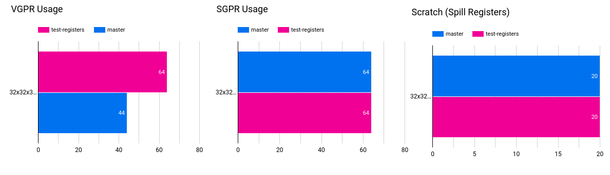 Mulan 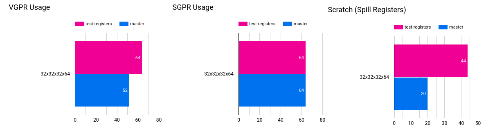 |
| Figure 9 : Plots of VGPR usage (left), SGPR usage (center), and spilled registers usage (right) for the EOCloverFBCGPU kernel on Setonix with ROCm 5.0.2 (top) and Mulan with ROCm 4.5.0 (bottom). All metrics are depicted for the master (blue) and test-registers (pink) branches |
Figure 9 shows the VGPR and SGPR usage for the EOCloverFBCGPU kernel on Setonix with ROCm 5.0.2. On the master branch, we had been using 24 KB shared memory (LDS), 44 VGPRs, and 64 SGPRs. On the master branch, LDS usage limited theoretical occupancy to 25% implying only 10 wavefronts could be active per CU at any given time, while the CDNA1 and CDNA2 architectures support 40 per CU.
On the test-registers branch, the LDS usage is removed (0 KB) which mitigates the occupancy limitations previously imposed by LDS. Instead, VGPR usage increased from 44 to 64 and SGPR usage remained the same. In this case, the occupancy is now limited by the VGPR usage and is
Which implies that 31 wavefronts can be active on each CU at any given time. This increase in occupancy allows significantly more opportunities to hide costs associated with cache misses and global memory read latency in general.
| Setonix
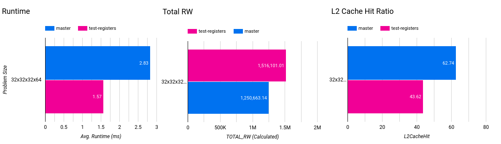 Mulan 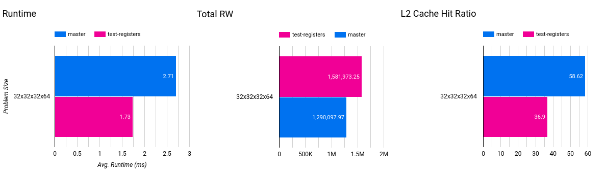 |
| Figure 10 : Plots of the runtime (left), the Total_RW metric (middle), and the L2 Cache Hit Ratio (right) for the EOCloverFBCGPU kernel on Setonix with ROCm 5.0.2 (top) and on Mulan with ROCm 4.5.0 (bottom). Runtime and Total_RW are shown for the master (blue) and test-registers (pink) |
Figure 10 shows the runtime for the EOCloverFBCGPU kernel on Setonix with ROCm 5.0.2 and Mulan with ROCm 4.5.0. On Setonix, For the 16x16x16x32 problem the average runtime for this kernel on the master branch is 0.25502 ms. The average runtime on the test-registers branch is 0.11593 ms (2.2x speedup). For the 32x32x32x64 problem the speedup is slightly less pronounced; the runtime on the master branch is 2.82561 ms and the runtime on the test-registers branch is 1.57072 ms (1.8x speedup).
On Mulan, For the 16x16x16x32 problem the average runtime for this kernel on the master branch is 0.27 ms. The average runtime on the test-registers branch is 0.13 ms (2.1x speedup). For the 32x32x32x64 problem the speedup is slightly less pronounced; the runtime on the master branch is 2.71 ms and the runtime on the test-registers branch is 1.72 (1.6x speedup).
Figure 10 also shows the Total_RW metric, which enables us to estimate the memory bandwidth. Using the Total_RW metric and the average kernel runtime for the test-registers branch, we have an estimated bandwidth of 965.67 GB/s, which is approximately 73.7% of the empirical peak memory bandwidth on Setonix for the . On Mulan, we have an estimated bandwidth of 919.75 GB/s, which is 85.5% peak performance.
|
||||||||||||
| Table 5 : Summary table comparing the achieved memory bandwidth for each system for the EOCloverFBCGPU kernel for both problem sizes on the test-registers branch. |
It is worth noting that the L2 Cache hit ratio dropped, implying that we have a higher percentage of cache misses; this is likely the next opportunity for making performance improvements.
Reorder operations
Purpose
Reduce L2 cache misses to reduce read latency for stencil operations. After transitioning away from shared memory, the cache hit ratio declined (cache miss increased). Figure 10 shows that the Total_RW metric increased as well. An increase in cache misses will result in traffic between L2 Cache and HBM memory; since the Total_RW metric reports the total amount of data moved between HBM and L2, the increase in Total_RW is expected to occur alongside a decrease in cache hits.
Overview
The order of operations for the stencil calculations is rearranged so that memory accesses are more sequential. A number of different orderings were tested, with the most optimal being “-YZT+YZT-X+X”.
This work is done on the test-ordering branch, which builds on top of the changes made in the test-registers branch.
Profiling
| Setonix
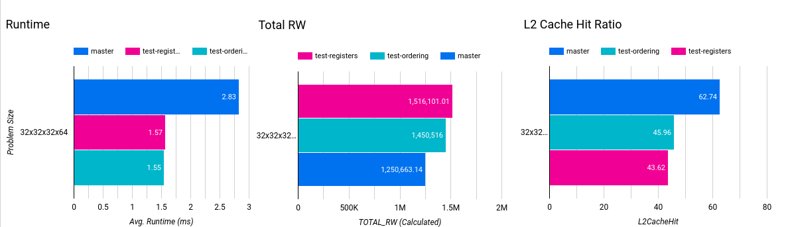 Mulan 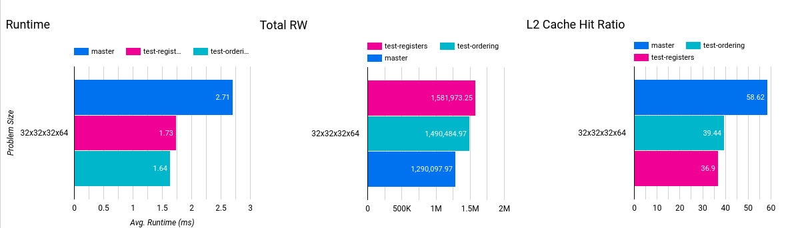 |
| Figure 11: Plots of the runtime (left), the Total_RW metric (middle), and the L2 Cache Hit Ratio (right) for the EOCloverFBCGPU kernel on Setonix with ROCm 5.0.2 (top) and on Mulan with ROCm 4.5.0 (bottom). Runtime and Total_RW are shown for the master (blue), test-registers (pink), and test-ordering (teal) branches. |
Shared Memory + Increase work-group size
Purpose
Move out-of-order memory access operations into shared memory rather than global/L2 Cache memory to reduce the impact of cache misses on runtime.
Overview
We estimate that 12 KB of shared memory needs to be used, which can impact occupancy, but is less than the 24 KB used in the original master version of the code. We anticipate being able to maintain an occupancy of 77.5% by increasing the number of threads per work-group to 512 (from 256)..
This method ultimately resulted in performance degradation and these changes were abandoned.
Setting the launch bounds
Purpose
Reviewing profiles has shown that there is some register spilling happening (scratch = 20 bytes/lane in all of our runs). Setting the launch_bounds MAX_THREADS_PER_BLOCK to 256 for kernels will allow the compiler to make better decisions about register usage (note that it defaults to 1024 which AMD claims can result in a tendency to overuse registers).
Overview
To configure the launch-bounds settings for the EO/OEClover*FBCGPU kernels, we place __launch_bounds__(256) after the the kernel name, but before the kernel arguments, where the kernels are defined. We are interested in seeing if this setting makes a difference for the original code (on the master branch; git sha 2425019; with shared memory usage) and on the test-ordering branch.
It is worth noting that if all kernels use the same maximum threads per block, we can use the compiler flag --gpu-max-threads-per-block=256. In our case, we found that using this flag resulted in performance degradation; we did not investigate this issue in detail.
This work is done on the launch-bounds branch, which builds on top of the changes implemented in both the test-registers and test-ordering branches.
Profiling
| Setonix
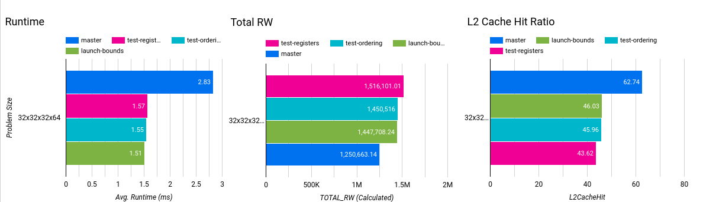 Mulan 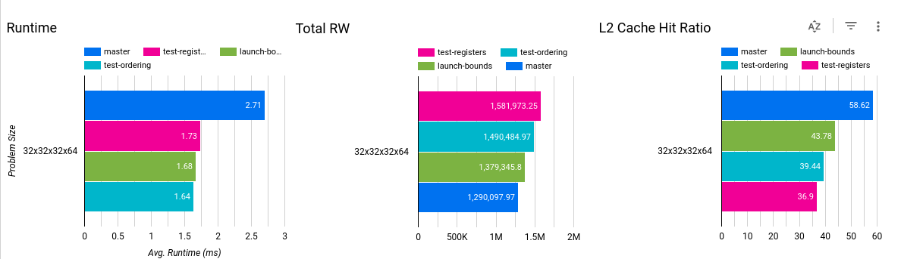 |
| Figure 12: Plots of the runtime (left), the Total_RW metric (middle), and the L2 Cache Hit Ratio (right) for the EOCloverFBCGPU kernel on Setonix with ROCm 5.0.2 (top) and on Mulan with ROCm 4.5.0 (bottom). Runtime and Total_RW are shown for the master (blue), test-registers (pink), test-ordering (teal), and launch-bounds (green) branches. |
| Setonix
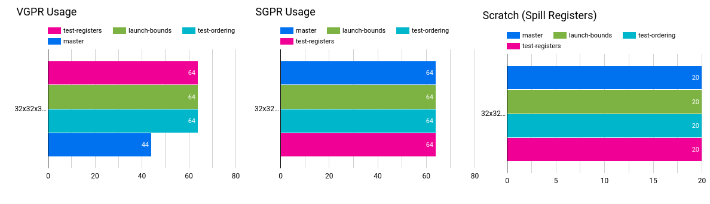
Mulan 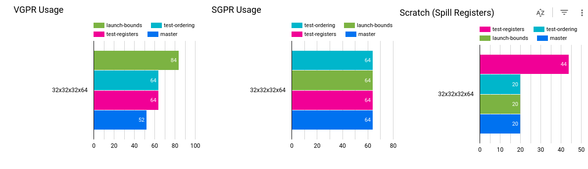 |
| Figure 13: Plots of VGPR usage (left), SGPR usage (center), and spilled registers usage (right) for the EOCloverFBCGPU kernel on Setonix with ROCm 5.0.2 (top) and Mulan with ROCm 4.5.0 (bottom). All metrics are depicted for the master (blue), test-registers (pink), test-ordering (teal), and launch-bounds (green) branches. |
Non-temporal stores
Purpose
Nontemporal stores are write operations to memory for data locations that will not be read from or written to soon. In stencil codes, this condition is typically met for updated values calculated as the result of a stencil operation. Using nontemporal stores bypasses cache which can free up cache for fetch operations.
Overview
After reducing values in the laplacian operation, use the __builtin_nontemporal_store( sum, &f[idx] ); rather than f[idx] = sum . In the EO/OEClover*FBCGPU kernels, the values that are updated are HIP vectors; because of this, we need to call this method for each component of the vector, e.g.
This work is done on the nontemporal_store branch, which builds on top of the changes made in the test-registers branch, the test-ordering branch, and the launch_bounds branch.
Profiling
| Setonix
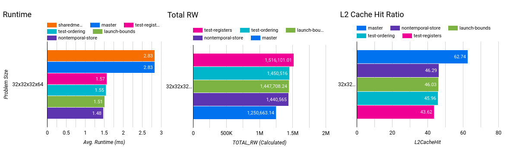 Mulan 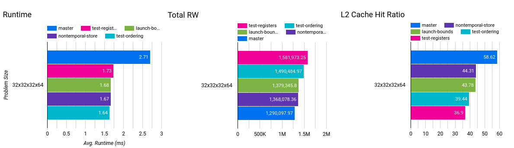 |
| Figure 14: Plots of the runtime (left), the Total_RW metric (middle), and the L2 Cache Hit Ratio (right) for the EOCloverFBCGPU kernel on Setonix with ROCm 5.0.2 (top) and on Mulan with ROCm 4.5.0 (bottom). Runtime and Total_RW are shown for the master (blue), test-registers (pink), test-ordering (teal), launch-bounds (green), and nontemporal-store (purple) branches. |
Figure 14 shows the runtimes, total_rw metric, and the L2 Cache hit for the EOCloverFBCGPU kernel for the nontemporal-store branch in comparison with master, test-registers, and test-ordering on Setonix with ROCm 5.0.2 and Mulan with ROCm 4.5.0. On Setonix, we see a slight improvement in the average kernel runtime (1.48 ms from 1.51 ms [1.02x] ) accompanied by a slight increase in the L2 Cache hit and reduction in Total RW. On Mulan, we see similar decreases in Total RW and increases in L2 Cache Hit; however, the runtime is slightly worse. We suspect that this behavior may be due to an older version of ROCm and would need to re-run these benchmarks with ROCm 5.0.2 (or greater) on Mulan to confirm.
| Setonix
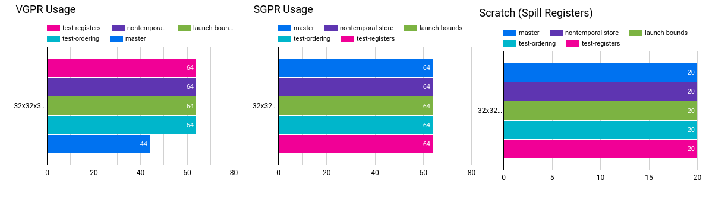
Mulan 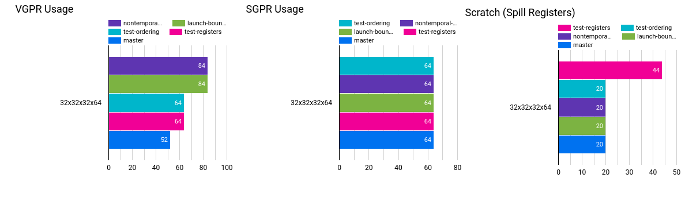 |
| Figure 15: Plots of VGPR usage (left), SGPR usage (center), and spilled registers usage (right) for the EOCloverFBCGPU kernel on Setonix with ROCm 5.0.2 (top) and Mulan with ROCm 4.5.0 (bottom). All metrics are depicted for the master (blue), test-registers (pink), test-ordering (teal), launch-bounds (green), and nontemporal-store (purple) branches. |
Figure 15 shows the vector register, scalar register, and spilled register usage for the EOCloverFBCGPU kernel for the same branches on Setonix and Mulan. Surprisingly on Mulan, the VGPR usage is higher when launch bounds are set ( in the launch-bounds and nontemporal-store branches ). The increased vector register per thread in the nontemporal-store and launch_bounds branches is consistent with these branches being slower than test-ordering on Mulan; this further hints at compiler issues with the older versions of ROCm on Mulan. On Setonix, with ROCm 5.0.2, we see no change in the register usage, suggesting that there is no change with the achieved occupancy.
Subdomain memory layout
Purpose
Fit each working-group memory in L2 Cache to reduce cache misses.
Overview
This work is done on the test-layout branch, and incorporates the changes in the test-registers branch (we do not use shared memory), the test-ordering branch, and launch_bounds branch, and the nontemporal-stores branch. In this branch the memory layout is changed so that the data is laid out in subdomains of size (nx/nbx,ny/nby,nz/nbz) and by default nbx=8,nby=4,nbz=4.
Profiling
| Setonix
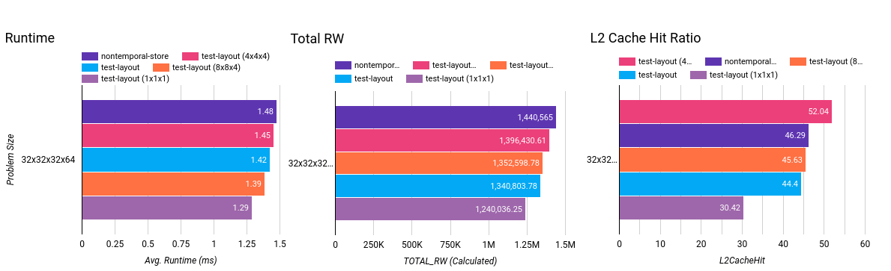 |
| Figure 16: Plots of the runtime (left), the Total_RW metric (middle), and the L2 Cache Hit Ratio (right) for the EOCloverFBCGPU kernel on Setonix with ROCm 5.0.2. Runtime and Total_RW are shown for the nontemporal-store (purple) branch and the test-layout branch with 8x4x4 (light blue), 4x4x4 (pink), 8x8x4 (orange), and 1x1x1 (mauve) subdomain configurations. |
| Setonix 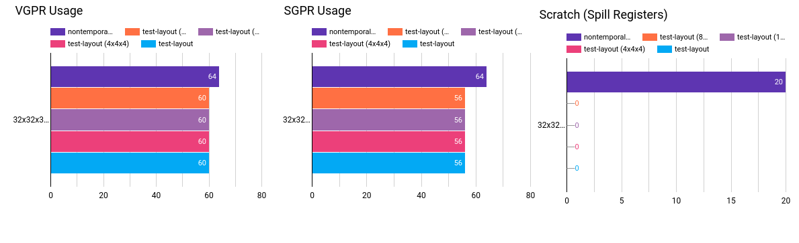 |
| Figure 17: Plots of VGPR usage (left), SGPR usage (center), and spilled registers usage (right) for the EOCloverFBCGPU kernel on Setonix with ROCm 5.0.2 (top) and Mulan with ROCm 4.5.0 (bottom). All metrics are depicted for the nontemporal-store (purple) branch and the test-layout branch with 8x4x4 (light blue), 4x4x4 (pink), 8x8x4 (orange), and 1x1x1 (mauve) subdomain configurations. |
For the test-layout branch, we compare four different subdomain configurations with the runtime and profiles of the nontemporal-store branch. The four configurations we consider are
- nbx=8 nby=4 nbz=4 (default)
- nbx=4 nby=4 nbz=4
- nbx=8 nby=8 nbz=4
- nbx=1 nby=1 nbz=1
Figure 16 shows the runtimes, total_rw metric, and the L2 Cache hit for the EOCloverFBCGPU kernel for these three configurations in comparison with the nontemporal-store branch on Setonix with ROCm 5.0.2. The 1x1x1 configuration of the test-layout branch results in the lowest runtime for this kernel. However, we can see that the 4x4x4 configuration has the highest L2 Cache hit percentage though it has the second highest amount of data in transit between L2 and HBM memory.
All of the test-layout configurations achieve a lower Total_RW metric in comparison to the nontemporal-store branch, indicating that the change in the memory layout reduces the amount of memory traffic. Interestingly, the L2 Cache hit is lower for the 8x4x4, 8x8x4, and 1x1x1 configurations of the test-layout branch in comparison to the nontemporal store branch. It is also worth noting that the 1x1x1 configuration has the lowest measured Total_RW metric, indicating that is results in the fewest amount of memory loads/stores between L2 and HBM memory.
Figure 17 shows the vector register, scalar register, and spilled register usage for the EOCloverFBCGPU kernel for the same branches and configurations. All configurations of the test-layout branch show a reduction in the number of vector registers per thread (60 from 64), the number of scalar registers per wavefront (56 from 64), and the number of spilled registers per work (0 from 20). The reduction of register usage is typically indicative of an increase in occupancy. Increasing occupancy can help hide operation latency and often results in improved performance, which is consistent with the reduction of runtime for the EOCloverFBCGPU kernel.
| 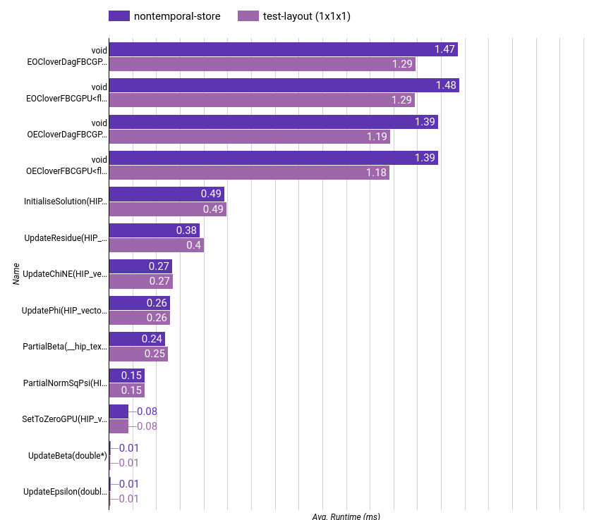 |
| Figure 18 : Comparison of the hotspot profiles for the nontemporal-store and test-layout branches, with the subdomain configuration of 1x1x1. |
Figure 18 shows a comparison of the hotspot profiles for the nontemporal-store and test-layout branches, with the subdomain configuration of 1x1x1. Note that, although we see reduction in the runtime for the EO/EOClover*FBCGPU kernels, other kernels see a slight degradation in performance.
Other findings
- Removal of the
-fast-math flagand using default optimizations (-O2) results in improved performance.
End Status
| 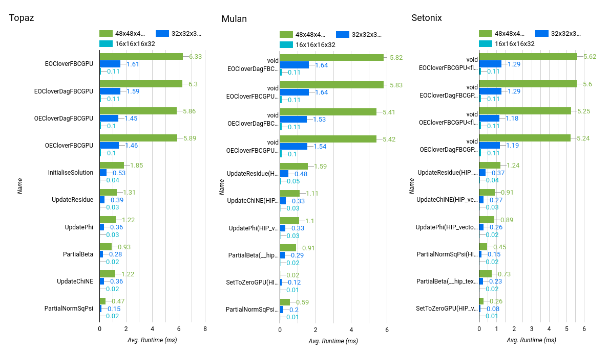 |
| Figure 19 : Comparison of the “best” hotspot profiles on Topaz, Mulan, and Setonix. |
Figure 19 shows the best hotspot profiles on Topaz, Mulan, and Setonix. The “best hotspot profile” is a listing of the minimum measured runtimes for each kernel.
| 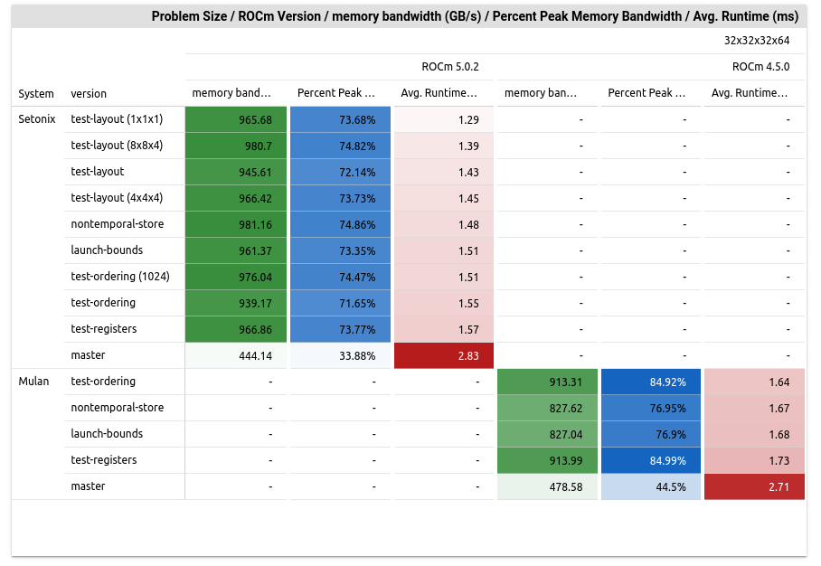 |
| Table 6 : Summary table comparing the achieved memory bandwidth and average kernel runtime for the EOCloverFBCGPU kernel on . |
Additional Notes
CDNA v. NVPTX Theoretical Occupancy
“The smallest unit of scheduled work for the CU to run is called a wave, and each wave contains 64 threads. Each of the four SIMDs in the CU can schedule up to 10 concurrent waves. The CU may suspend a wave, and execute another wave, while waiting for memory operations to complete. This helps to hide latency and maximize use of the CU’s compute resources.” - source
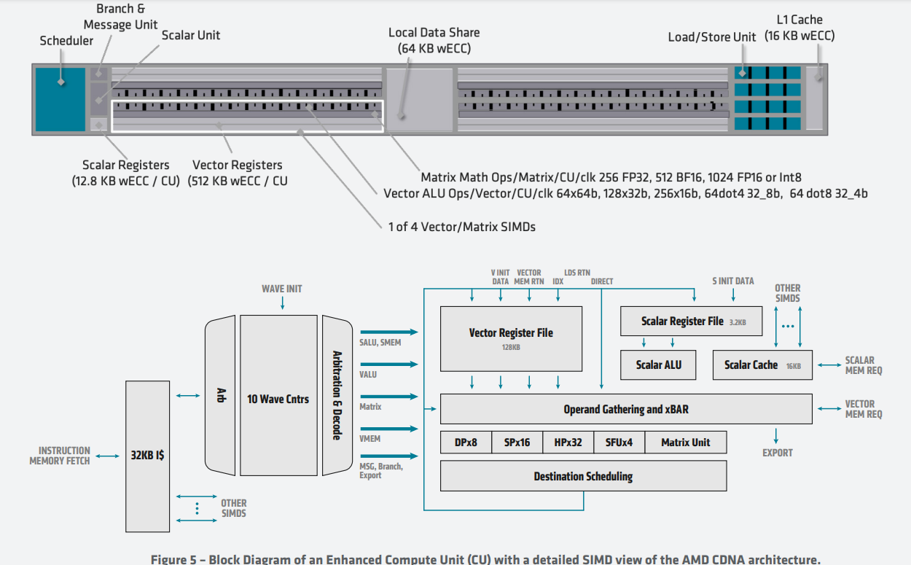
Each CDNA Compute Unit has four SIMD units, each with a 128 KB Vector Register File (512 KB per CU; 128,000 32-bit Vector General Purpose Registers [VGPRs] ), and the MI100 GPU has 120 Compute Units. The CDNA1 Compute Unit has 64 KB LDS memory and 16 KB L1 Cache - source
Since each CU can have 40 wavefronts in flight at any time (10 per SIMD Unit, 4 SIMD Units per CU), to saturate the GPU, each CU must be assigned 2560 threads (40 wavefronts x 64 threads/wavefront). Given the available 128K VGPRs per compute unit , saturating the GPU means that each thread can have a maximum of 50 VGPRs at any given time; using more than 50 registers per thread will lower the occupancy on the GPU. Keep in mind that both instruction level parallelism and thread level parallelism can hide latency, with the former typically associated with more register usage and lower occupancy.
The figure below shows the register usage on the V100 GPUs for the EOCloverFBCGPU from the nvidia visual profiler; on the right we see (highlighted) that 76 registers per thread are used on the V100 GPU.
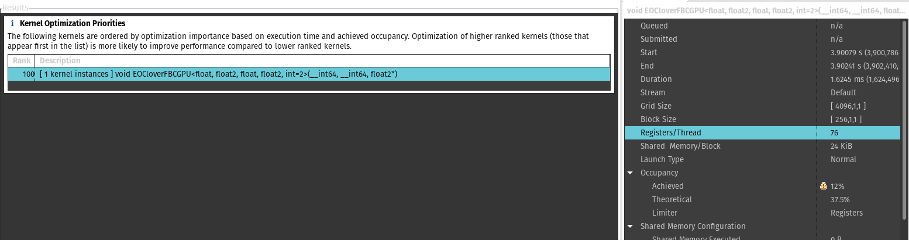
The figure below, from a talk given at ORNL, details the theoretical occupancy based on register usage on the CDNA2 (MI200 series) GPUs.
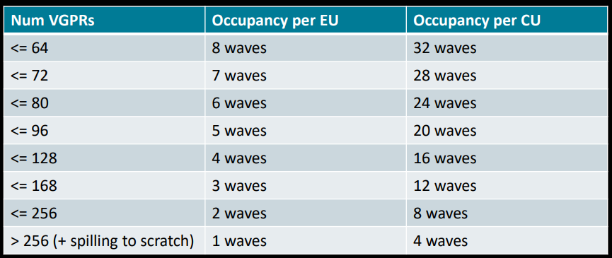 - source
We can view the number of registers per thread (among other details) by passing the -save-temps flag to hipcc.
For the Nvidia V100 GPU, we have the following :
“The maximum number of concurrent warps per SM remains the same as in Pascal (i.e., 64), and other factors influencing warp occupancy remain similar as well:
- The register file size is 64k 32-bit registers per SM.
- The maximum registers per thread is 255.
- The maximum number of thread blocks per SM is 32.
- Shared memory capacity per SM is 96KB, similar to GP104, and a 50% increase compared to GP100.” - source
To identify scratch use and spilling (with ROCm 5.4.x and greater), compile using the -Rpass-analysis=kernel-resource-usage flag, e.g.
hipcc -Rpass-analysis=kernel-resource-usage --amdgpu-target=gfx906